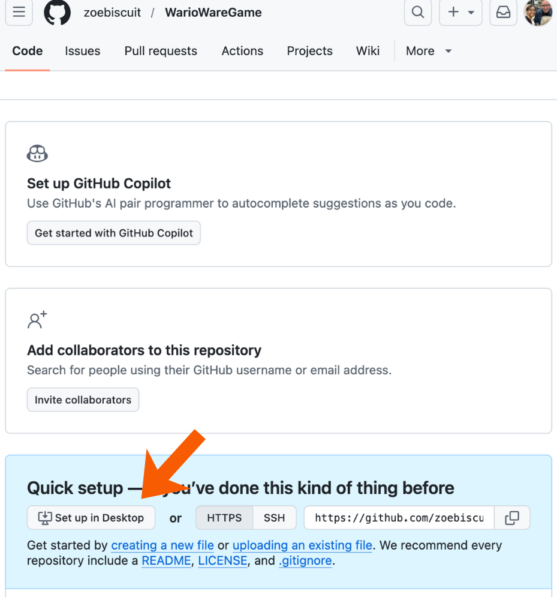
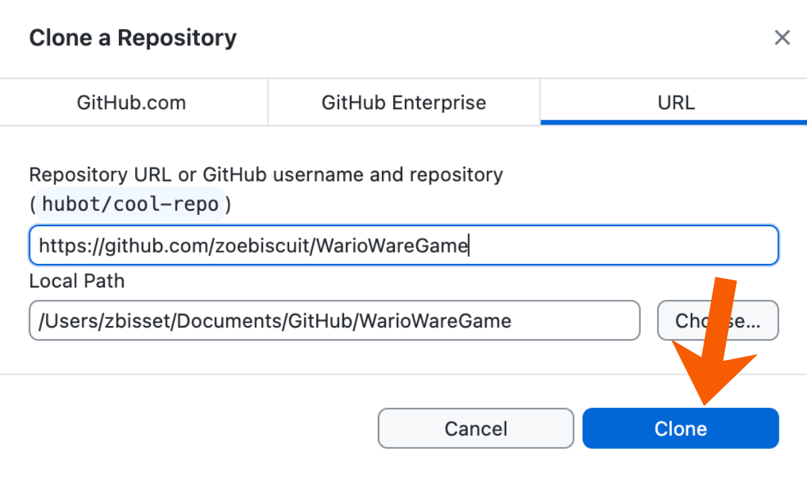
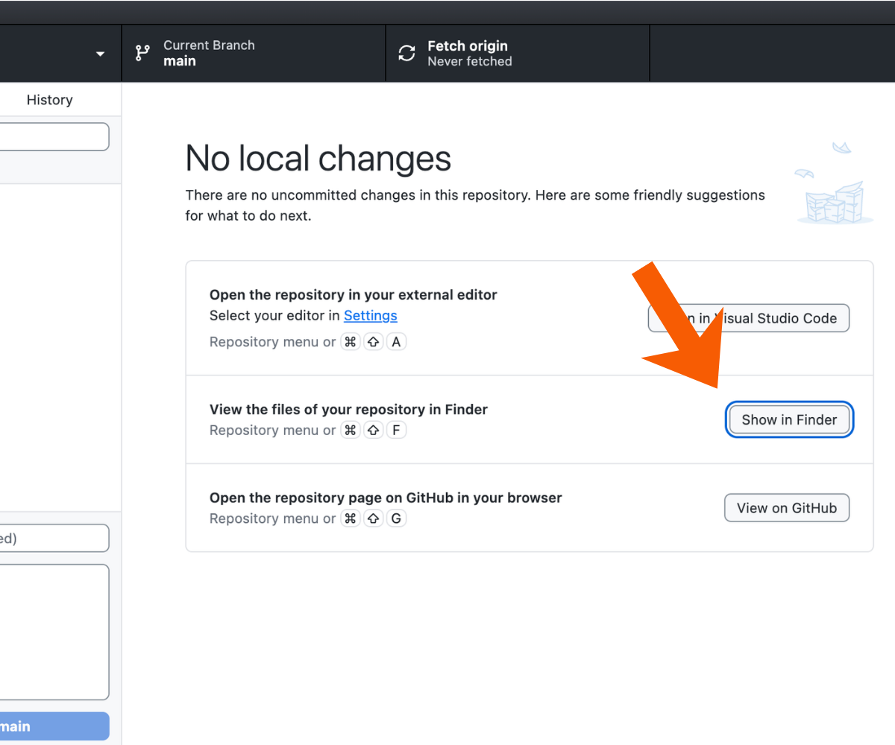
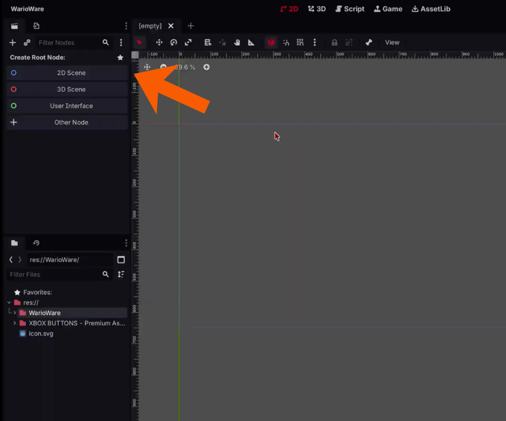
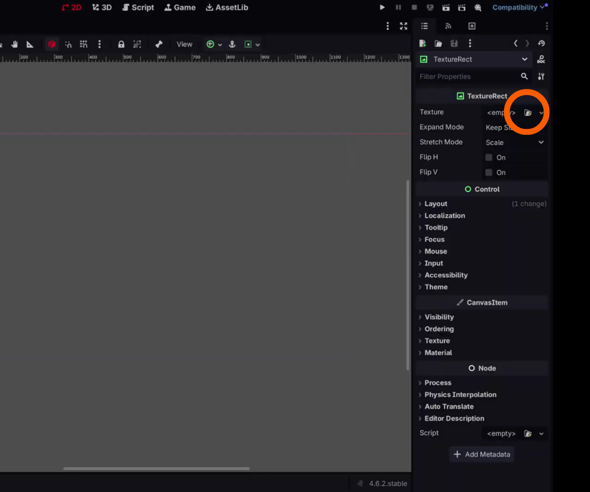
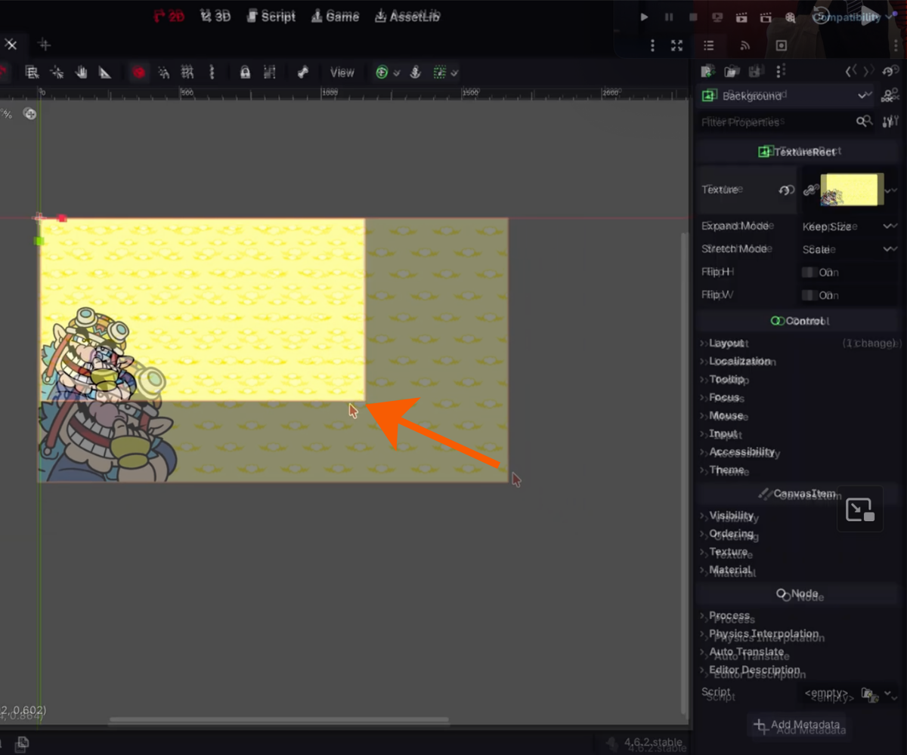
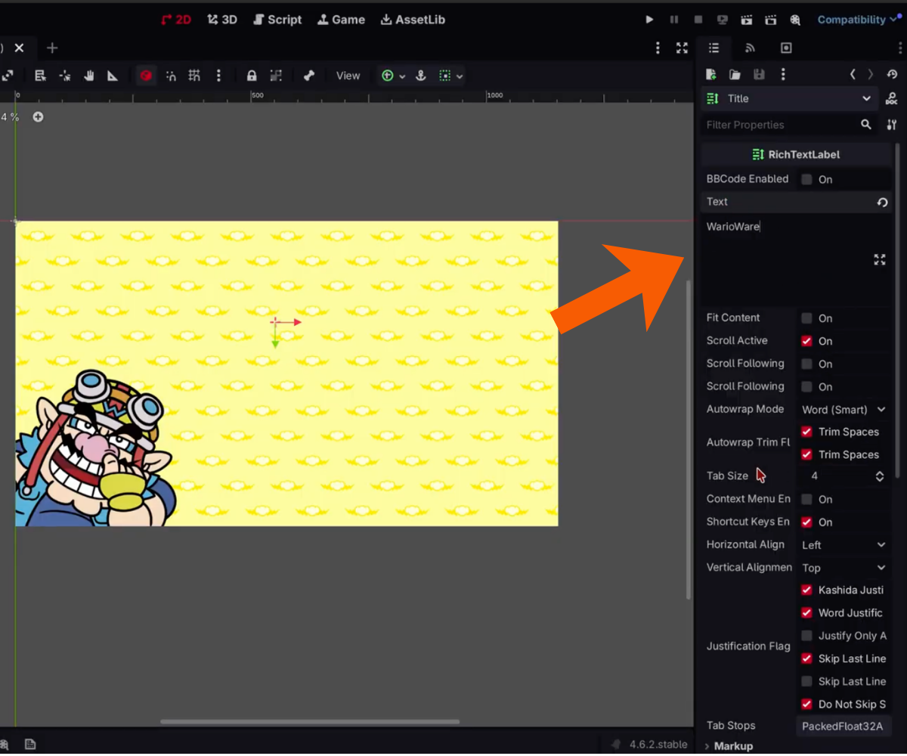
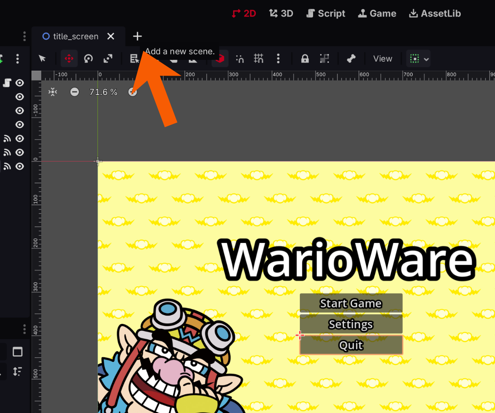
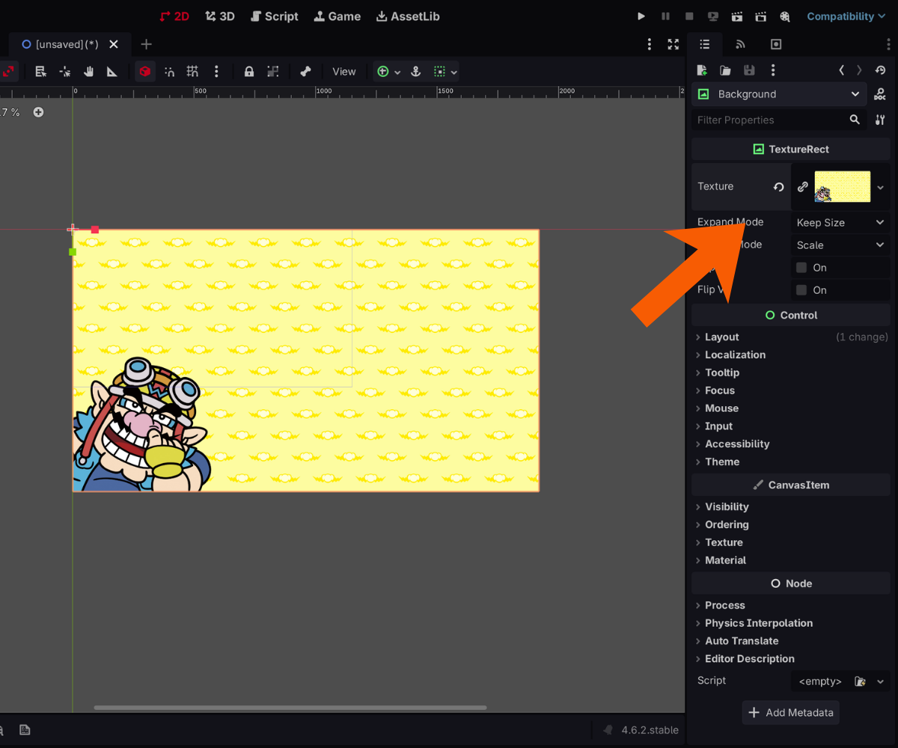

Now you don't want to touch anything. Click "clone"

If you get taken to the GitHub Desktop, that is exactly where we want to be.
You will now want to click the "show in Finder" button or "show in FileManager" button. This will show you where your repository is. Keep track of this location. If you are on macOS, you can click option + command + c at the same time to copy the file address. If on Windows, you can hold shift and right click the file to then select "Copy as path." All these options save the file address, so we can later paste it into Godot.

Now navigate to Godot and create your first project! (YAY) Type your game's name into "Project Name:" and paste the address we had before into the project's path. You can paste by clicking control + v on Windows, or command + v on macOS. Then click "create".

Now we can roll into the real fun stuff!
Creating the Start Menu
What is a Start Menu?
A start menu is pretty much the place where the player will go to once they open the game. It will consist of a:
- Title
- Start Game Button
- Settings
- and a Quit button

Creating the Title
Create a new "2D Scene." Name that new node "TitleScreen" so we can easily navigate through our nodes. What are nodes? Nodes are the building blocks of Godot when you build the game.

Click the + button near the top left corner of the screen. We want to add a new node that will act as the background image of our game. Search up "TextureRect" in the search when you click the "+". Name it "Background"
No we want to change the texture of the TextureRect to the image we want the background to be. Click the "Background" node and go to the right of the screen. Click the file button next to "Texture." Upload any image you want.

To fit the image to the screen size, drag the image to the edge of the blue lines. The blue lines represent the size of the game screen.

Now we want to display the title for our game. Create a new node by double clicking the "TitleScreen" node and searching for the "RichTextLabel." Name it "Title." Drag the node on the background to position it where you want it on the screen. For me, I'm putting it in the almost top-center. Click the node, and on the right side of the screen, click the text box to type in the game's name.

Scroll down to the "Control" section and click "Theme Overrides" and then "Font Sizes." Check off "Normal" and change it to 108px. Can't see your text box? Try dragging out the textbox to change its size. Move the textbox to where you want it to be.
Now click "Constants" and click "Outline Size." Change it to 40. This adds a nice black outline to our text.

Notice how the text seems cut off on the left? To fix that, go to "Layout" under "Control" and turn off "Clip Content." Now it should look like this:

Creating a Button
Now we have to add our "Start Game," "Settings," and "Quit" buttons.
Right click on the open space under the "Title" node. Search for "Button" and name it "Start." Click that node and go to the textbox on the right of the screen. Change what it says on the button to "Start Game." Drag the button to the desired size and move it to under the title, as shown below:

Now we want to change the font size. Go to "Control" on the right then to "Theme Overrides" and then to "Font Sizes." Change the font size to 26px. Go to "Constants" and change the outline size to 14.

Now we need to vertically align our three buttons. Double click the "TitleScreen" node and search for "VBoxContainer." This container will help us align our buttons neatly in a vertical alignment. Drag the "Start" button into the container. It should look like this:

Move the VBoxContainer to the middle. Drag out its height so more buttons can fit in the container.

Click on the button node and click control + d to duplicate the buttons. Do this two times to have three buttons. Name the nodes "Start", "Settings", and "Quit." Go to each node's text box and change what they say to also either "Start", "Settings", and "Quit". Should look like this:

Saving the Project
There will be times where Godot crashes and all the progress for your project will be unsaved. Don't panic! I gotchu. To save a project, press "control + s." A window will pop up asking you what to save the scene as. Create a new folder to save the scene in. Name the folder "Scenes." Save the scene in that folder and then click "Save."

Make sure to do this often as you make your game. I don't want to see you crying over your game.
Programming the Buttons
Now lets put some code into these buttons! The programming language that Godot uses is GDScript. It is specific towards Godot, but is relatively simple to learn. In my opinion, it is similar to Python.
Playtesting your Game
Committing and Pushing to GitHub
Remember when I said that you have to constantly push and commit your game every hour? But what does that mean? To commit means to save your work on your computer. To push means to actually bring those saved changes to GitHub. I know, it can sound confusing at first. Just remember there is just two buttons to click.
First, you want to navigate to your GitHub Desktop. You will see that some changes have been made. These changes are the changes you made to your Godot files. Every time you made a change to the game, GitHub Desktop will point it out. Now go to the bottom and click commit. Remember this saves your changes. A summary may be required before hitting commit. In that case, just type what you did, like "Created a Menu Screen."

Now hit push origin or publish branch. This will put those saved changes from your project onto GitHub. And you're all good!

Just remember to hit two buttons every hour you work on your project: commit and push. Try saying it 20 times fast!
Creating the Level Scene
In the Level Scene, it will be the screen displayed between each minigame level. It will display what level you are on. The Screen will display:
- 5 Pieces of Garlic representing the player's lives
- the Level Number
- and a Timer
Creating a New Scene
Click the + next to the Title scene to create a new scene. Name it "level_scene."

Click "2D Scene." Double click it and add in a "TextureRect" node and change the texture in the right side of the screen to the desired background. For me, I am going to keep it the same image.

Resize the image to be the size of the screen. In order words, match it up to the blue lines again.
Adding in the Garlic/Lives
In this game, the pieces of garlic will represent the lives of the player. Think of Minecraft and how the hearts in the game represented a player's health. The onions are similar to that concept.
We want the onions to be displayed in a horizontal alignment. So, double click the 2D Scene node and search for a new node called "HBoxContainer."

Double click the HBoxContainer and search for a TextureRect node. This TextureRect will hold the pictures of each onion/life. Rename the node to "Garlic." Rename the HBoxContainer to "GarlicContainer" to make it easier to navigate.

Now press control + d to make 4 more pieces of garlic in the GarlicContainer. In total there should be 5. Can't see them? Try dragging out the length of the container. Rename each piece of garlic to "Garlic#" where # is the number of garlic it is. For example, the second garlic is "Garlic2"

Drag and move the GarlicContainer to where you want it to be on the screen. For me, I am going to keep it near the top-center.

Change the texture for each piece of garlic to be a picture of garlic. If you don't want it to be garlic, that's okay. You can change it to a picture of a heart or anything else you would prefer. You change the picture by clicking the node and changing their texture on the right side of the screen.
Now we have 5 pieces of garlic. Yum!
Adding in the Level Count & Timer
For the game, we need a piece of text saying what level number the player is on. We also need another piece of text stating how much time they have left.
Double click the 2D Scene and add in two "RichTextLabel" nodes. Name one "Level" and the other "Timer."